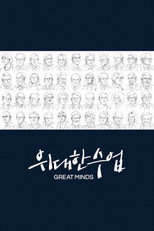
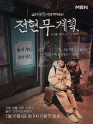

넷플릭스 예능106편 중 인기 60편
순서는 TMDB 인기도입니다 — 넷플릭스 외 서비스는 공식 순위를 공개하지 않습니다. 제공처는 JustWatch 자료(2026-09-22 확인)이며 가입 전 서비스에서 최종 확인하세요. 넷플릭스 요금·할인 →
1WWE Raw Raw시리즈 · 1993 · 예능제공처 ↗2 런닝맨시리즈 · 2010 · 코미디 · 예능 · 왓챠에도제공처 ↗3김병만의 정글의 법칙시리즈 · 2011 · 예능제공처 ↗4
런닝맨시리즈 · 2010 · 코미디 · 예능 · 왓챠에도제공처 ↗3김병만의 정글의 법칙시리즈 · 2011 · 예능제공처 ↗4 미운 우리 새끼시리즈 · 2016 · 예능 · 왓챠에도제공처 ↗5WWE NXT시리즈 · 2010 · 액션 · 모험제공처 ↗6WWE Superstars시리즈 · 2009 · 액션 · 모험제공처 ↗7TV 동물농장시리즈 · 2001 · 가족 · 예능제공처 ↗8WWE SmackDown WWE Friday Night SmackDown시리즈 · 1999 · 예능제공처 ↗9SBS 인기가요시리즈 · 1998 · 예능 · 가족제공처 ↗10헬'S 키친 Hell's Kitchen시리즈 · 2005 · 예능제공처 ↗11X맨시리즈 · 2003 · 코미디 · 예능제공처 ↗12꼬리에 꼬리를 무는 그날 이야기시리즈 · 2020 · 예능 · 미스터리 · 왓챠에도제공처 ↗13그것이 알고싶다시리즈 · 1992 · 다큐멘터리 · 예능 · 왓챠에도제공처 ↗14
미운 우리 새끼시리즈 · 2016 · 예능 · 왓챠에도제공처 ↗5WWE NXT시리즈 · 2010 · 액션 · 모험제공처 ↗6WWE Superstars시리즈 · 2009 · 액션 · 모험제공처 ↗7TV 동물농장시리즈 · 2001 · 가족 · 예능제공처 ↗8WWE SmackDown WWE Friday Night SmackDown시리즈 · 1999 · 예능제공처 ↗9SBS 인기가요시리즈 · 1998 · 예능 · 가족제공처 ↗10헬'S 키친 Hell's Kitchen시리즈 · 2005 · 예능제공처 ↗11X맨시리즈 · 2003 · 코미디 · 예능제공처 ↗12꼬리에 꼬리를 무는 그날 이야기시리즈 · 2020 · 예능 · 미스터리 · 왓챠에도제공처 ↗13그것이 알고싶다시리즈 · 1992 · 다큐멘터리 · 예능 · 왓챠에도제공처 ↗14 나는 SOLO I am Solo시리즈 · 2021 · 예능 · 웨이브, 왓챠, 티빙에도넷플릭스 한국 최고 1위15
나는 SOLO I am Solo시리즈 · 2021 · 예능 · 웨이브, 왓챠, 티빙에도넷플릭스 한국 최고 1위15 나는 SOLO, 그 후 사랑은 계속된다 I'm SOLO, Love goes on시리즈 · 2022 · 예능 · 웨이브, 왓챠, 티빙에도넷플릭스 한국 최고 3위17신발 벗고 돌싱포맨시리즈 · 2021 · 예능 · 왓챠에도제공처 ↗18집사부일체시리즈 · 2017 · 예능 · 코미디 · 왓챠에도제공처 ↗19
나는 SOLO, 그 후 사랑은 계속된다 I'm SOLO, Love goes on시리즈 · 2022 · 예능 · 웨이브, 왓챠, 티빙에도넷플릭스 한국 최고 3위17신발 벗고 돌싱포맨시리즈 · 2021 · 예능 · 왓챠에도제공처 ↗18집사부일체시리즈 · 2017 · 예능 · 코미디 · 왓챠에도제공처 ↗19 솔로지옥 Single’s Inferno시리즈 · 2021 · 예능 · 코미디넷플릭스 한국 최고 1위20패밀리가 떴다시리즈 · 2008 · 코미디 · 예능 · 왓챠에도제공처 ↗21백종원의 골목식당시리즈 · 2018 · 예능제공처 ↗22골 때리는 그녀들시리즈 · 2021 · 예능 · 왓챠에도제공처 ↗23
솔로지옥 Single’s Inferno시리즈 · 2021 · 예능 · 코미디넷플릭스 한국 최고 1위20패밀리가 떴다시리즈 · 2008 · 코미디 · 예능 · 왓챠에도제공처 ↗21백종원의 골목식당시리즈 · 2018 · 예능제공처 ↗22골 때리는 그녀들시리즈 · 2021 · 예능 · 왓챠에도제공처 ↗23 피지컬 100: 이탈리아 Physical 100: Italy시리즈 · 2026 · 예능넷플릭스 한국 최고 9위24
피지컬 100: 이탈리아 Physical 100: Italy시리즈 · 2026 · 예능넷플릭스 한국 최고 9위24 용감한 형사들 Brave Detectives시리즈 · 2022 · 범죄 · 예능 · 웨이브, 왓챠, 티빙에도넷플릭스 한국 최고 4위25
용감한 형사들 Brave Detectives시리즈 · 2022 · 범죄 · 예능 · 웨이브, 왓챠, 티빙에도넷플릭스 한국 최고 4위25 틈만나면, Whenever Possible시리즈 · 2024 · 예능 · 왓챠에도넷플릭스 한국 최고 7위26맛남의 광장시리즈 · 2019 · 예능 · 웨이브에도제공처 ↗27
틈만나면, Whenever Possible시리즈 · 2024 · 예능 · 왓챠에도넷플릭스 한국 최고 7위26맛남의 광장시리즈 · 2019 · 예능 · 웨이브에도제공처 ↗27 니돈내산 독박투어시리즈 · 2023 · 예능 · 웨이브, 왓챠, 티빙에도제공처 ↗28오징어 게임: 더 챌린지 Squid Game: The Challenge시리즈 · 2023 · 예능넷플릭스 한국 최고 4위29
니돈내산 독박투어시리즈 · 2023 · 예능 · 웨이브, 왓챠, 티빙에도제공처 ↗28오징어 게임: 더 챌린지 Squid Game: The Challenge시리즈 · 2023 · 예능넷플릭스 한국 최고 4위29 크라임씬시리즈 · 2014 · 범죄 · 예능 · 왓챠, 티빙에도제공처 ↗30
크라임씬시리즈 · 2014 · 범죄 · 예능 · 왓챠, 티빙에도제공처 ↗30 데블스 플랜 The Devil's Plan시리즈 · 2023 · 예능넷플릭스 한국 최고 1위31
데블스 플랜 The Devil's Plan시리즈 · 2023 · 예능넷플릭스 한국 최고 1위31 흑백요리사: 요리 계급 전쟁 Culinary Class Wars시리즈 · 2024 · 예능넷플릭스 한국 최고 1위32
흑백요리사: 요리 계급 전쟁 Culinary Class Wars시리즈 · 2024 · 예능넷플릭스 한국 최고 1위32 불량 연애 Badly in Love시리즈 · 2025 · 예능넷플릭스 한국 최고 4위33
불량 연애 Badly in Love시리즈 · 2025 · 예능넷플릭스 한국 최고 4위33 피지컬: 100 Physical: 100시리즈 · 2023 · 예능넷플릭스 한국 최고 1위34
피지컬: 100 Physical: 100시리즈 · 2023 · 예능넷플릭스 한국 최고 1위34 이혼숙려캠프 Divorce Re-Boot Camp시리즈 · 2024 · 예능 · 웨이브, 왓챠, 티빙에도넷플릭스 한국 최고 4위37미스터트롯시리즈 · 2020 · 예능 · 웨이브, 왓챠, 티빙에도제공처 ↗38
이혼숙려캠프 Divorce Re-Boot Camp시리즈 · 2024 · 예능 · 웨이브, 왓챠, 티빙에도넷플릭스 한국 최고 4위37미스터트롯시리즈 · 2020 · 예능 · 웨이브, 왓챠, 티빙에도제공처 ↗38 성+인물: 네덜란드, 독일 편 Risqué Business: The Netherlands and Germany시리즈 · 2024 · 예능넷플릭스 한국 최고 2위39편먹고 공치리시리즈 · 2021 · 예능제공처 ↗40
성+인물: 네덜란드, 독일 편 Risqué Business: The Netherlands and Germany시리즈 · 2024 · 예능넷플릭스 한국 최고 2위39편먹고 공치리시리즈 · 2021 · 예능제공처 ↗40 대환장 기안장 Kian’s Bizarre B&B시리즈 · 2025 · 예능넷플릭스 한국 최고 2위41룸메이트시리즈 · 2014 · 코미디 · 예능제공처 ↗42
대환장 기안장 Kian’s Bizarre B&B시리즈 · 2025 · 예능넷플릭스 한국 최고 2위41룸메이트시리즈 · 2014 · 코미디 · 예능제공처 ↗42 피지컬: 아시아 Physical: Asia시리즈 · 2025 · 예능넷플릭스 한국 최고 2위43
피지컬: 아시아 Physical: Asia시리즈 · 2025 · 예능넷플릭스 한국 최고 2위43 도라이버 Screwballs시리즈 · 2025 · 예능 · 코미디넷플릭스 한국 최고 2위44
도라이버 Screwballs시리즈 · 2025 · 예능 · 코미디넷플릭스 한국 최고 2위44 비서진 My Secretary시리즈 · 2025 · 예능 · 코미디넷플릭스 한국 최고 3위45
비서진 My Secretary시리즈 · 2025 · 예능 · 코미디넷플릭스 한국 최고 3위45 좀비버스 Zombieverse시리즈 · 2023 · 예능넷플릭스 한국 최고 3위46
좀비버스 Zombieverse시리즈 · 2023 · 예능넷플릭스 한국 최고 3위46 미친맛집: 미식가 친구의 맛집 K-foodie meets J-foodie시리즈 · 2025 · 예능넷플릭스 한국 최고 1위47
미친맛집: 미식가 친구의 맛집 K-foodie meets J-foodie시리즈 · 2025 · 예능넷플릭스 한국 최고 1위47 성+인물: 일본 편 Risqué Business: Japan시리즈 · 2023 · 예능넷플릭스 한국 최고 4위48강심장시리즈 · 2009 · 코미디 · 예능제공처 ↗49
성+인물: 일본 편 Risqué Business: Japan시리즈 · 2023 · 예능넷플릭스 한국 최고 4위48강심장시리즈 · 2009 · 코미디 · 예능제공처 ↗49 지구마불 세계여행 World Dice Tour시리즈 · 2023 · 예능 · 다큐멘터리 · 티빙에도넷플릭스 한국 최고 3위50크라임씬 제로시리즈 · 2025 · 예능 · 범죄제공처 ↗51덩치 서바이벌-먹찌빠시리즈 · 2023 · 예능 · 왓챠에도제공처 ↗52다시 갈 지도시리즈 · 2022 · 예능 · 웨이브, 티빙에도제공처 ↗53
지구마불 세계여행 World Dice Tour시리즈 · 2023 · 예능 · 다큐멘터리 · 티빙에도넷플릭스 한국 최고 3위50크라임씬 제로시리즈 · 2025 · 예능 · 범죄제공처 ↗51덩치 서바이벌-먹찌빠시리즈 · 2023 · 예능 · 왓챠에도제공처 ↗52다시 갈 지도시리즈 · 2022 · 예능 · 웨이브, 티빙에도제공처 ↗53 미스터리 수사단 Agents of Mystery시리즈 · 2024 · 예능넷플릭스 한국 최고 2위54
미스터리 수사단 Agents of Mystery시리즈 · 2024 · 예능넷플릭스 한국 최고 2위54 최강야구 A Clean Sweep시리즈 · 2022 · 예능 · 웨이브, 왓챠, 티빙에도넷플릭스 한국 최고 3위55
최강야구 A Clean Sweep시리즈 · 2022 · 예능 · 웨이브, 왓챠, 티빙에도넷플릭스 한국 최고 3위55 돌싱글즈 Love After Divorce시리즈 · 2021 · 예능 · 웨이브, 왓챠에도넷플릭스 한국 최고 2위56정글밥시리즈 · 2024 · 예능 · 왓챠에도제공처 ↗57SBS 연기대상시리즈 · 1992 · 예능제공처 ↗58백종원의 3대 천왕시리즈 · 2015 · 예능제공처 ↗59
돌싱글즈 Love After Divorce시리즈 · 2021 · 예능 · 웨이브, 왓챠에도넷플릭스 한국 최고 2위56정글밥시리즈 · 2024 · 예능 · 왓챠에도제공처 ↗57SBS 연기대상시리즈 · 1992 · 예능제공처 ↗58백종원의 3대 천왕시리즈 · 2015 · 예능제공처 ↗59 고딩엄빠 Teenage Parents시리즈 · 2022 · 예능 · 웨이브, 왓챠에도넷플릭스 한국 최고 6위60
고딩엄빠 Teenage Parents시리즈 · 2022 · 예능 · 웨이브, 왓챠에도넷플릭스 한국 최고 6위60 모태솔로지만 연애는 하고 싶어 Better Late Than Single시리즈 · 2025 · 예능넷플릭스 한국 최고 1위
모태솔로지만 연애는 하고 싶어 Better Late Than Single시리즈 · 2025 · 예능넷플릭스 한국 최고 1위
런닝맨시리즈 · 2010 · 코미디 · 예능 · 왓챠에도제공처 ↗3김병만의 정글의 법칙시리즈 · 2011 · 예능제공처 ↗4미운 우리 새끼시리즈 · 2016 · 예능 · 왓챠에도제공처 ↗5WWE NXT시리즈 · 2010 · 액션 · 모험제공처 ↗6WWE Superstars시리즈 · 2009 · 액션 · 모험제공처 ↗7TV 동물농장시리즈 · 2001 · 가족 · 예능제공처 ↗8WWE SmackDown WWE Friday Night SmackDown시리즈 · 1999 · 예능제공처 ↗9SBS 인기가요시리즈 · 1998 · 예능 · 가족제공처 ↗10헬'S 키친 Hell's Kitchen시리즈 · 2005 · 예능제공처 ↗11X맨시리즈 · 2003 · 코미디 · 예능제공처 ↗12꼬리에 꼬리를 무는 그날 이야기시리즈 · 2020 · 예능 · 미스터리 · 왓챠에도제공처 ↗13그것이 알고싶다시리즈 · 1992 · 다큐멘터리 · 예능 · 왓챠에도제공처 ↗14나는 SOLO I am Solo시리즈 · 2021 · 예능 · 웨이브, 왓챠, 티빙에도넷플릭스 한국 최고 1위15
위대한 수업, 그레이트 마인즈시리즈 · 2021 · 예능 · 다큐멘터리 · 왓챠에도제공처 ↗16나는 SOLO, 그 후 사랑은 계속된다 I'm SOLO, Love goes on시리즈 · 2022 · 예능 · 웨이브, 왓챠, 티빙에도넷플릭스 한국 최고 3위17신발 벗고 돌싱포맨시리즈 · 2021 · 예능 · 왓챠에도제공처 ↗18집사부일체시리즈 · 2017 · 예능 · 코미디 · 왓챠에도제공처 ↗19솔로지옥 Single’s Inferno시리즈 · 2021 · 예능 · 코미디넷플릭스 한국 최고 1위20패밀리가 떴다시리즈 · 2008 · 코미디 · 예능 · 왓챠에도제공처 ↗21백종원의 골목식당시리즈 · 2018 · 예능제공처 ↗22골 때리는 그녀들시리즈 · 2021 · 예능 · 왓챠에도제공처 ↗23피지컬 100: 이탈리아 Physical 100: Italy시리즈 · 2026 · 예능넷플릭스 한국 최고 9위24용감한 형사들 Brave Detectives시리즈 · 2022 · 범죄 · 예능 · 웨이브, 왓챠, 티빙에도넷플릭스 한국 최고 4위25틈만나면, Whenever Possible시리즈 · 2024 · 예능 · 왓챠에도넷플릭스 한국 최고 7위26맛남의 광장시리즈 · 2019 · 예능 · 웨이브에도제공처 ↗27니돈내산 독박투어시리즈 · 2023 · 예능 · 웨이브, 왓챠, 티빙에도제공처 ↗28오징어 게임: 더 챌린지 Squid Game: The Challenge시리즈 · 2023 · 예능넷플릭스 한국 최고 4위29크라임씬시리즈 · 2014 · 범죄 · 예능 · 왓챠, 티빙에도제공처 ↗30데블스 플랜 The Devil's Plan시리즈 · 2023 · 예능넷플릭스 한국 최고 1위31흑백요리사: 요리 계급 전쟁 Culinary Class Wars시리즈 · 2024 · 예능넷플릭스 한국 최고 1위32불량 연애 Badly in Love시리즈 · 2025 · 예능넷플릭스 한국 최고 4위33피지컬: 100 Physical: 100시리즈 · 2023 · 예능넷플릭스 한국 최고 1위34
전현무계획시리즈 · 2024 · 예능 · 디즈니+, 웨이브, 왓챠, 티빙에도제공처 ↗35불타는 청춘시리즈 · 2015 · 예능 · 왓챠에도제공처 ↗36이혼숙려캠프 Divorce Re-Boot Camp시리즈 · 2024 · 예능 · 웨이브, 왓챠, 티빙에도넷플릭스 한국 최고 4위37미스터트롯시리즈 · 2020 · 예능 · 웨이브, 왓챠, 티빙에도제공처 ↗38성+인물: 네덜란드, 독일 편 Risqué Business: The Netherlands and Germany시리즈 · 2024 · 예능넷플릭스 한국 최고 2위39편먹고 공치리시리즈 · 2021 · 예능제공처 ↗40대환장 기안장 Kian’s Bizarre B&B시리즈 · 2025 · 예능넷플릭스 한국 최고 2위41룸메이트시리즈 · 2014 · 코미디 · 예능제공처 ↗42피지컬: 아시아 Physical: Asia시리즈 · 2025 · 예능넷플릭스 한국 최고 2위43도라이버 Screwballs시리즈 · 2025 · 예능 · 코미디넷플릭스 한국 최고 2위44비서진 My Secretary시리즈 · 2025 · 예능 · 코미디넷플릭스 한국 최고 3위45좀비버스 Zombieverse시리즈 · 2023 · 예능넷플릭스 한국 최고 3위46미친맛집: 미식가 친구의 맛집 K-foodie meets J-foodie시리즈 · 2025 · 예능넷플릭스 한국 최고 1위47성+인물: 일본 편 Risqué Business: Japan시리즈 · 2023 · 예능넷플릭스 한국 최고 4위48강심장시리즈 · 2009 · 코미디 · 예능제공처 ↗49지구마불 세계여행 World Dice Tour시리즈 · 2023 · 예능 · 다큐멘터리 · 티빙에도넷플릭스 한국 최고 3위50크라임씬 제로시리즈 · 2025 · 예능 · 범죄제공처 ↗51덩치 서바이벌-먹찌빠시리즈 · 2023 · 예능 · 왓챠에도제공처 ↗52다시 갈 지도시리즈 · 2022 · 예능 · 웨이브, 티빙에도제공처 ↗53미스터리 수사단 Agents of Mystery시리즈 · 2024 · 예능넷플릭스 한국 최고 2위54최강야구 A Clean Sweep시리즈 · 2022 · 예능 · 웨이브, 왓챠, 티빙에도넷플릭스 한국 최고 3위55돌싱글즈 Love After Divorce시리즈 · 2021 · 예능 · 웨이브, 왓챠에도넷플릭스 한국 최고 2위56정글밥시리즈 · 2024 · 예능 · 왓챠에도제공처 ↗57SBS 연기대상시리즈 · 1992 · 예능제공처 ↗58백종원의 3대 천왕시리즈 · 2015 · 예능제공처 ↗59고딩엄빠 Teenage Parents시리즈 · 2022 · 예능 · 웨이브, 왓챠에도넷플릭스 한국 최고 6위60모태솔로지만 연애는 하고 싶어 Better Late Than Single시리즈 · 2025 · 예능넷플릭스 한국 최고 1위